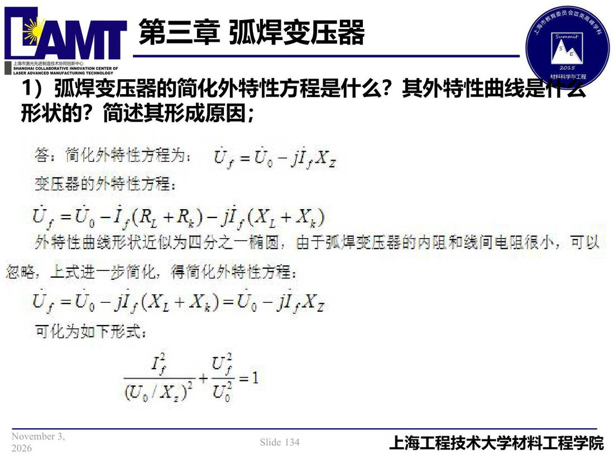

03 第3章 弧焊变压器/p134 弧焊变压器的简化外特性方程是什么？其外特性曲线是什么
p134 弧焊变压器的简化外特性方程是什么？其外特性曲线是什么
📄 原文：📄 弧焊电源 课件（PDF 第 134 页）（幻灯片 134/273；PDF 第 134 页）
弧焊变压器的简化外特性方程是什么？其外特性曲线是什么

讲义原文
- 弧焊变压器的简化外特性方程是什么？其外特性曲线是什么形状的？简述其形成原因；
页面文字（OCR 机读，可能有错字，以页图为准）
1） 弧焊变压景简化外特性方程是什么？其外特性曲线是行云 形状的？简述其形成原因： 答：筒化外特性方程为：U，=U。-j,Xz 变压器的外特性方程： U，=Uo-i，（R +R：）-j，（X1+X） 外特性曲线形状近似为四分之一椭圆，由于弧焊变压器的内阻和线间电阻很小，可以 忽略，上式进一步简化，得简化外特性方程： U；=Uo-j，（X1 +X7）=00-14582 可化为如下形式：